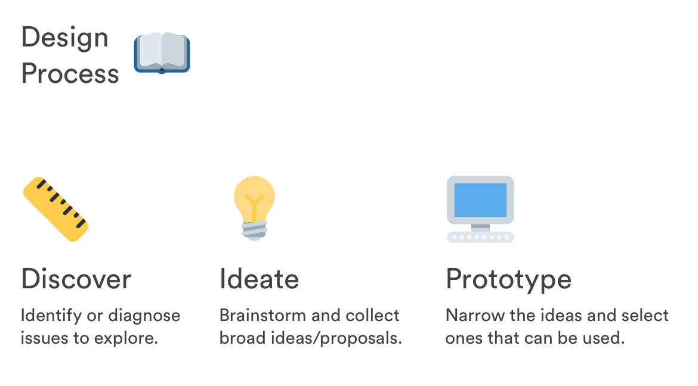
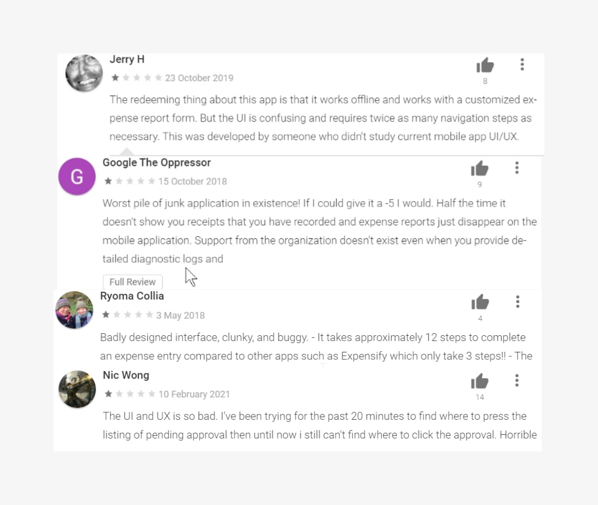

Background
What is an ERP & benefit of ERP system like NetSuite in India?
• Enterprise Resource Planning (ERP) are systems that integrate all the different departments and functions of an organization into a single
computer system to serve the various needs of these departments.
It’s very cost-effective with an integrated solution;
different departments can easily share information and communicate with one another.
Oracle NetSuite(an ERP based software) can become an important asset which the small and rising businesses need because it’s need of the hour to get their work online.
Especially, in India, where small businesses are rising every day and not everyone can afford to have a PC and buying an android smartphone is financially easier than a desktop. Hence, if we can rethink the android application from a businessperson’s perspective it will be very beneficial for rising businesses and could create a good market.
Problem Space
Assumptions
Every businessperson regardless of the size of the business must be using an Oracle ERP system. And Oracle Netsuite Android application must be used as well.
Problems
• The overwhelming experience of using the application while oboarding and scanning through expenses and timer memo.
• Feeling frustrated due to no in-app guide and support.
• Lots of Accessibility Issues related to vision.
Constraints
• Due to NetSuite app being paid software. I re-designed only those features which didn't require account creation i.e Onboarding,Login,Expenses,Timer.
My Role
This is an individual exploration. I am (of course) the lead UX designer! I am responsible for user research, data synthesis, concept mock-ups, visual design and interactive prototype. I am super excited about doing everything by myself!

The Challenge
• Give new experience while preserving the functionality of its old version
• Accessibility issues that affect people with diverse abilities are not activity addressed
• Help people build a great business
User Research
To start with, I looked for resources such as online documents, videos, google playstore reviews, and business people using Oracle NetSuite.
Speed Bump
I decided to use a set of interview questions which were to be used as a standard framework for each of the interviews.
But due to some unexpected events and busy schedule of business persons I couldn’t get their one-on-one interview.
So, I decided to go ahead with Play store reviews.
Online Research Observations
• No help and support.
• The reviews pointed out that the UI was very confusing for the user.
• Users were findin it hard locating their expenses due to wrong hierarchy.
• Confusing UI of timer, when user opens the timer screen they first see the previously created timer memos and then the play button of timer.
which wasn't letting them just focus on a single task at a time i.e creating memo.
• There were also many accessibility problems which were making the visually impaired people not be able to use it.

Accessibility Test Observations
I also did the accessibility testing to ensure I wasn't leaving perspective of people with diverse abilities. I used Google's Accessibility Scanner App to discover that there were 15 places where these following 3 problems occurred:

Few Screens with accessibility problems


Iterations
Brainstorming Solutions
After noting down the user problems and discovering the areas where there is a need for accessibility. Now was the perfect time to think about the solutions and how will they look like. I started imagining
• How help and support would be like, how normal customers show/tell about their problems.
1) It's through texts but it's much more informative if they can show the problems through screenshots.
2) Searching their problems.
3) On calls
• How can I make the user focus on one task at while still showing his last memos.
1) By bringing the feature's main action button in the middle and placing the secondary actions in the bottom or on sides.
2) Not making the screen distracting.
With solutions like these I started to do my first intial designs.
Initial Design
I created my first iteration with previous research data in mind. It provided a good infrastructure to redesign.
But after conducting further user research and learning from feedbacks, I discovered couple of problems from product and user experience perspectives.
Product
• It just doesn’t build the connections among features. Features become meaningless when people don’t understand them
User Experience
• Confusing and complicated (Details in the following picture)
Final Design
After user tests I came up with my high-fidelity screens. In this section I shared not only the user pain points with it’s solution but also the reason behind it's solution.
• Onboarding Screens: I made new onboarding screens to help user understand the application.
Pain point— Difficult on-boarding and conversion rate.
When a user installs the application EULA is shown to the customer upfront, which isn’t a proper way to present. As in many modern-day applications, it is observed that user is given a choice to go through EULA or get started right away if they want to.
So in my redesign I did the same.

When the user opens the application first time they can easily get started right away and still have the choice of reading the EULA as well. It helps the user to get onboard easily within 3 clicks.
• Login/Company SSO: I re-designed the login experience where in the old screen the Login through Email and Company-SSO were on the same screen which was distracting
Pain point- From usablity testing, it was pointed out that it would be nice if the application just focused on login screen then for alternative ways.


• Help & support screen- new feature:
With all the users' feedback in mind, I designed the screen to simulate a Help and Support experience.
• By using screenshots of the problems
• searching their problem
• By calling the support
• Application version can be a cause of buggy experience.
• Step-by-step guide if the user is new to the platform and need a refresher.
I found from playstore reviews that users were having trouble when went through the app screens in the previous design. Anytime an experience falls somewhere in the middle, it rarely gets an enthusiastic attempt at being shared.

Expenses:


Pain point— In old design expenses are giving very little information with a wrong hierarchy because it's the expense memo which contains relatively more information about the expense than it's date and time. From the user's experience they were finding hard to locate their desired expense. Due to no clear distinction between each month’s expenses of a particular year.
• Timer:


• Users while using it felt perplexed and distracted whether they should focus on the timer and fill out the memo first or should go through the previous timer memos first.
• Time log feature needs to be labelled.
Prototype
Check the prototype from Protopie!
Accessibility issues


Takeaways
Getting feedback as early as possible was very valuable as it heavily influenced my design process. Prototyping fast is therefore the key to get meaningful results. Also, empathy is one of the core elements of the design process. I spent many time to understand the user’s perspective and context.
Design critique is also a powerful way getting the feedback and chance to unveil few points that I have never even thought of them.
Next: About
Previous: Home